Manual de uso
Apunta App Escritorio
Para gestorías y asesorías: revisa los apuntes de tus clientes y déjalos listos para tu programa de contabilidad.
⬇ Descargar el manual en PDFApunta... Y olvídate.
Versión 1.2.5 · Septiembre de 2026
Capítulo 1
Qué es Apunta App Escritorio
Tus clientes autónomos fotografían sus facturas y sus tickets con Apunta App en el móvil, y al terminar el trimestre te mandan un fichero. Tú lo sueltas aquí, y la app lo lee, lo ordena y te lo deja listo para importar en tu programa de contabilidad. Tú revisas y validas; del resto se ocupa la app.
También puedes usarla con clientes que prefieren no tocar nada: ellos te hacen llegar sus papeles y escaneas tú el taco entero en la fotocopiadora de la oficina.
Consejo
Lo que Apunta App Escritorio no hace. No es un programa de contabilidad ni una gestoría: no liquida impuestos, no presenta modelos y no tiene validez fiscal. Prepara el trabajo, no lo firma. Es el puente entre tu cliente autónomo y tu programa de contabilidad.
Todo se queda en tu ordenador
La app no envía nada a ningún servidor: ni las facturas, ni las fotos, ni los datos de tus clientes. Todo vive en el equipo donde la instalas. Eso tiene una consecuencia importante que conviene tener clara desde el principio, y por eso hay un capítulo entero sobre ella: la copia de seguridad la haces tú. → capítulo 12
Cómo está pensado el trabajo
La app no intenta acertarlo todo sola. Intenta no equivocarse en silencio: cuando ha leído un dato con seguridad lo pone en verde, y cuando no, lo deja marcado para que lo mires. Cada cosa que tú corriges, además, se la queda para la próxima vez.
Atención
El verde ayuda, pero el visto bueno lo das tú. Que un apunte salga en verde significa que las cuentas cuadran y que los datos se leyeron con seguridad, no que nadie tenga que mirarlo. Repásalos igual: siempre puede colarse algo, y quien responde del libro registro eres tú.
Capítulo 2
La primera vez que la abres
La primera vez que abres Apunta App Escritorio, la app te lleva por cuatro pasos. Solo salen una vez.
1 · Contratar
Lo primero es la suscripción. Se contrata y se renueva desde la Microsoft Store, y el primer mes es de prueba.
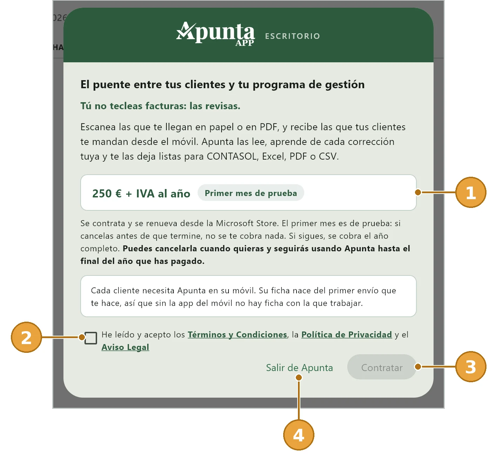
1El precio y el mes de prueba. Si cancelas antes de que termine el primer mes, no se te cobra nada.
2La casilla de los textos legales. Los términos, la privacidad y el aviso legal: puedes leerlos desde sus enlaces. Marcar la casilla es aceptarlos. Si algún día cambian, la app te pedirá que los aceptes de nuevo.
3Contratar. Se enciende al marcar la casilla y abre la compra de la Microsoft Store.
4Salir de Apunta. Cierra la app. Al volver a abrirla, sale otra vez esta ventana.
2 · La bienvenida
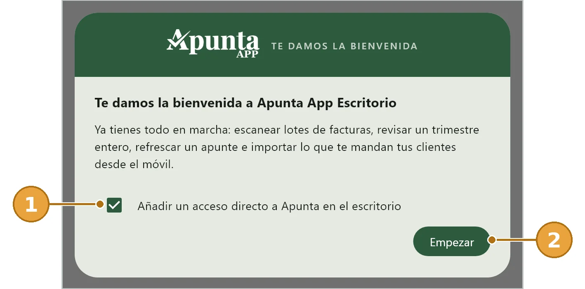
1Añadir un acceso directo en el escritorio. Viene marcado: deja el icono de la app en tu escritorio para abrirla con un doble clic.
2Empezar.
3 · El tutorial
Un recorrido de tres pasos por la pantalla: la barra de herramientas, tus clientes y el trabajo por trimestres. Te lo puedes saltar, y volver a verlo cuando quieras desde Ayuda. → capítulo 11
4 · Tu primer cliente
Para empezar, la app te pide el nombre y el NIF de un cliente tuyo. Con ellos crea una ficha de prueba, para que puedas trabajar desde el primer día escaneándole papeles.
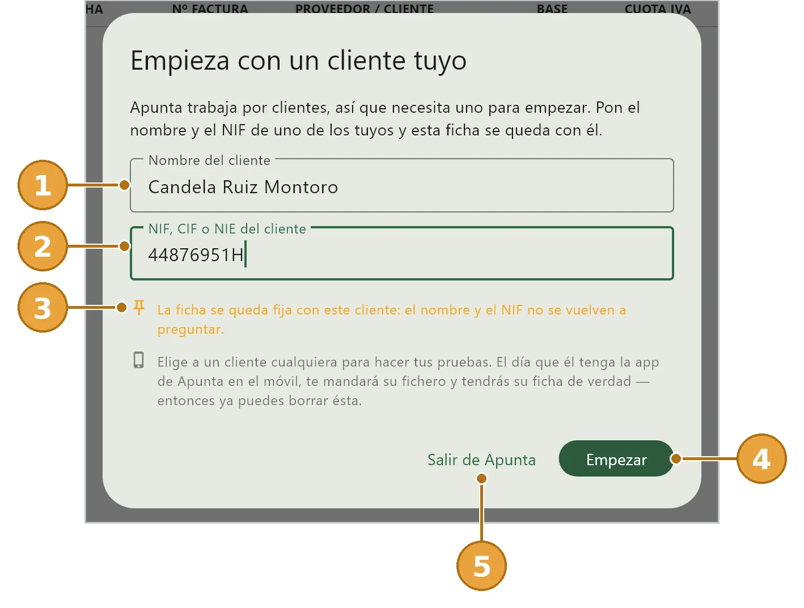
1Nombre del cliente.
2Su NIF, CIF o NIE.
3La ficha se queda fija con este cliente: el nombre y el NIF no se vuelven a preguntar, así que escríbelos bien.
4Empezar. Se enciende cuando el nombre y el NIF son correctos.
5Salir de Apunta. Este paso no se puede saltar: si sales, te lo vuelve a pedir la próxima vez.
El día que ese cliente tenga Apunta App en el móvil y te mande su fichero, tendrás su ficha de verdad. Entonces puedes borrar la de prueba. → capítulo 4
Capítulo 3
El tablero de trabajo
Es la pantalla principal, donde vas a estar trabajando todo el rato, y se divide en tres partes: arriba, las herramientas (importar el fichero que te manda tu cliente y el cuaderno, que es donde la app aprende); a la izquierda, tus clientes; y a la derecha, los apuntes del cliente y del trimestre que tengas abiertos.
Este capítulo es el mapa de la aplicación: cada botón, en una línea, con el capítulo donde se explica a fondo.
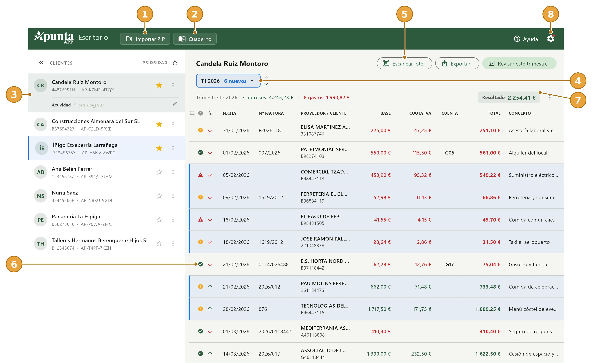
1Importar ZIP. Trae a la ficha el fichero ZIP exportado desde la app del móvil de tu cliente. No hace falta pulsarlo: puedes arrastrar uno o varios ficheros sobre cualquier parte de la ventana, y es más rápido. → capítulo 5
2Cuaderno. Es el sistema de aprendizaje de la app: mejora con cada uso. Guarda los nombres de proveedores por NIF y las cuentas contables que vas validando. → capítulo 6
3La lista de clientes. Cada uno con su NIF y su número de cliente. La estrella sube arriba a los clientes con los que estás trabajando, y al importar el fichero de alguien se le marca sola. → capítulo 4
4El trimestre. Cambias de periodo sin salir de la ficha. Al lado te dice cuántos apuntes nuevos han entrado del escaneo o de la importación y siguen sin revisar. → capítulo 4
5Escanear lote, Exportar y Revisar este trimestre. Las tres acciones del día a día, siempre a mano. → capítulo 9 → capítulo 10
6El semáforo y el sentido. El círculo dice si el apunte está comprobado; la flecha, si es un gasto (roja, hacia abajo) o un ingreso (verde, hacia arriba). → capítulo 7
7El resultado del trimestre. Ingresos menos gastos, calculado sobre lo que hay en pantalla.
8Ayuda y ajustes. En Ayuda tienes el tutorial, los textos legales, el contacto y la versión instalada. La rueda dentada de Ajustes, arriba a la derecha, abre los ajustes; si lleva un punto rojo, es que te toca hacer una copia de seguridad. → capítulo 11
Ordenar la tabla
Pulsa el rótulo de cualquier columna (fecha, proveedor, total…) para ordenar por ella; otra vez, y el orden se invierte. Los tres iconos pequeños de la izquierda ordenan también: como entraron, en el orden del montón de papel; por semáforo, primero lo rojo y lo ámbar; y por tipo, ingresos y gastos.
Las filas llevan marcas de color: azul, un apunte nuevo que todavía no has abierto; gris, uno que la app tiene entre manos mientras revisa el trimestre y que aún no se puede abrir. Si pasas el ratón por encima de una celda cortada, ves el texto entero.
Cuando quieres ver más columnas
La tabla enseña las columnas que caben. Si necesitas verlas todas, tienes tres formas, y se pueden combinar. La primera: plegar la lista de clientes.
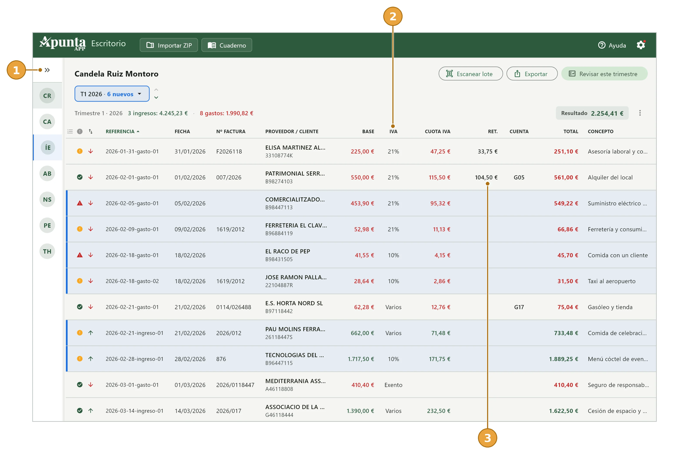
1Plegar la lista de clientes. Con la doble flecha, el panel se recoge a un lado y la tabla se ensancha. Los clientes siguen ahí, con sus iniciales; la misma flecha lo devuelve.
2IVA. El tipo de cada apunte. Cuando una factura trae varios tipos, pone Varios; si no lleva IVA, Exento.
3Retención. Los euros de IRPF, cuando la factura los lleva.
La segunda: arrastrar la barra que separa la lista de clientes de la tabla. Déjala al ancho que te venga bien según tu pantalla o tu forma de trabajar.
Y la tercera: elegir tú qué columnas se ven, en la rueda dentada de Ajustes, arriba a la derecha, dentro de Configuración de la tabla. Es tu forma de trabajar, así que vale para todos tus clientes.
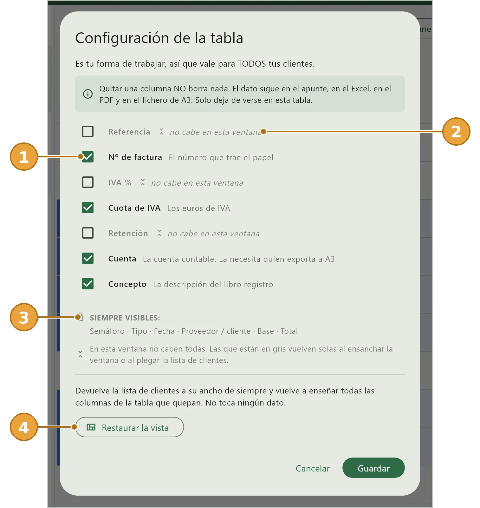
1Las columnas opcionales, cada una con lo que significa.
2No cabe en esta ventana. Si la pantalla se queda corta, la app te lo dice en vez de amontonarlo todo; al ensanchar la ventana o plegar la lista, vuelven solas.
3Las que están siempre: semáforo, tipo, fecha, proveedor, base y total no se quitan nunca.
4Restaurar la vista. Devuelve la tabla a como venía de fábrica.
Consejo
Nada de esto borra datos. Que una columna no se vea no significa que el dato no esté: sigue en el apunte, en el Excel y en lo que exportas. Solo deja de verse en esta tabla.
Capítulo 4
Tus clientes
Salvo la ficha de prueba del primer día, las fichas de cliente se crean de una sola manera: importando el fichero ZIP exportado desde Apunta App en el móvil. No se crean a mano, y tampoco se crean escaneando papeles. → capítulo 2
Eso significa que cada cliente tuyo tiene que tener Apunta App en su móvil. Es el canal por el que te hace llegar su trimestre: él fotografía y revisa, exporta, y tú recibes.
Consejo
¿Y el cliente que no quiere tocar nada y te trae el sobre de papeles? También vale, pero necesitas su ficha. Pídele que se instale la app y te mande una exportación una sola vez, aunque vaya casi vacía: con ese fichero se crea su ficha, y a partir de ahí ya puedes escanearle tú todos los papeles que quieras.
Al importar, la app crea la ficha con el nombre, el NIF y el número de cliente que vienen dentro del fichero, y la marca como prioridad para tenerla arriba mientras trabajas.
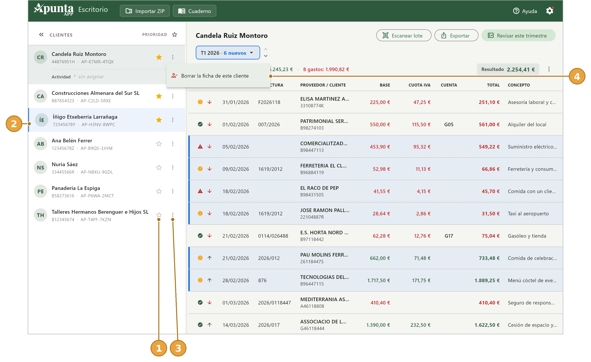
1La estrella. Tiene a mano al cliente mientras trabajas su trimestre: lo sube arriba del todo. Al quitarla, vuelve a su sitio en la lista.
2El realce azul. Señala las fichas que han recibido apuntes nuevos y todavía no has mirado. Desaparece cuando la abres.
3El menú de la ficha. Los tres puntos abren las opciones de ese cliente.
4Borrar la ficha de este cliente. Se lleva por delante sus apuntes y sus fotos. No hay vuelta atrás salvo por una copia de seguridad. → capítulo 12
Atención
Borrar una ficha es definitivo: no pasa por la papelera. Antes de borrar, la app te dice cuántos apuntes, fotos y trimestres se pierden, te pide marcar una casilla y te ofrece exportarlo todo primero.
La actividad del cliente
Al pulsar un cliente se despliega su ficha, con la Actividad. Es un código opcional, de hasta cinco cifras: el que uses para ese cliente en tu programa de contabilidad. Con el lápiz lo escribes o lo cambias.
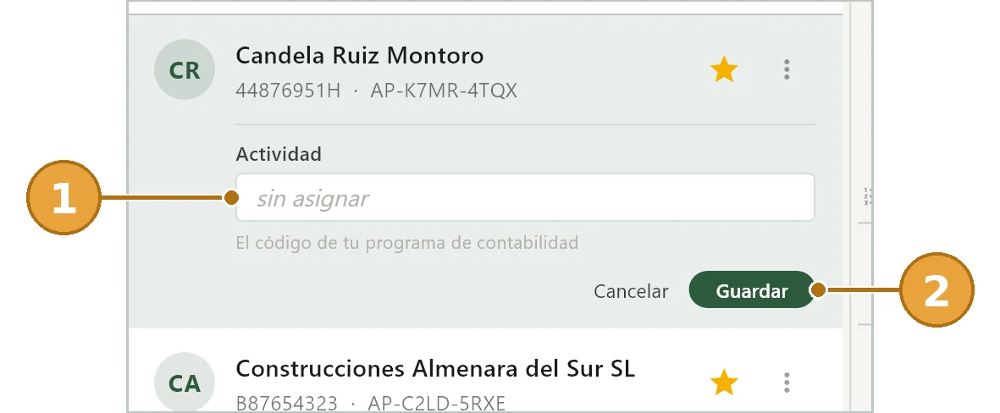
1La caja de la actividad. Hasta cinco cifras.
2Guardar. O Cancelar, para dejarla como estaba.
De momento es un dato para ti: no sale en lo que exportas.
El trimestre
Cada ficha guarda todos los trimestres de ese cliente. El selector te lleva de uno a otro, y el número en azul te dice cuántos apuntes nuevos quedan por revisar en cada uno.
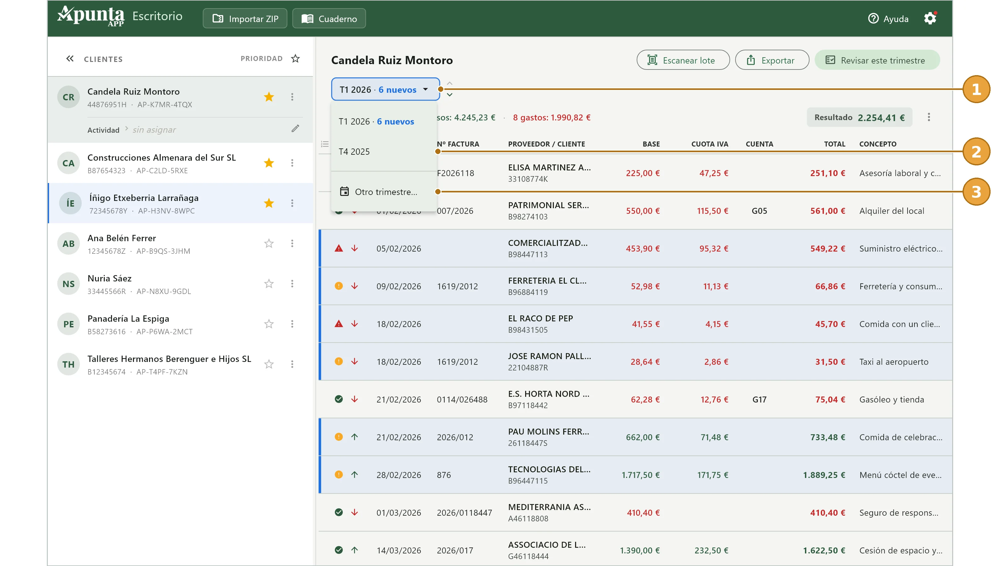
1El trimestre abierto, con sus apuntes nuevos.
2Los demás trimestres que ya tienen algo. La app solo te enseña los que existen.
3Otro trimestre. Para ir a uno que todavía está vacío, por ejemplo si vas a escanear facturas de un periodo antiguo.
Las flechas pequeñas que hay al lado del selector te llevan al trimestre anterior o al siguiente sin abrir la lista.
Ir a un trimestre vacío
Con Otro trimestre… eliges el año y el trimestre, aunque todavía no tenga apuntes. Sirve para escanear ahí un lote de facturas antiguas.
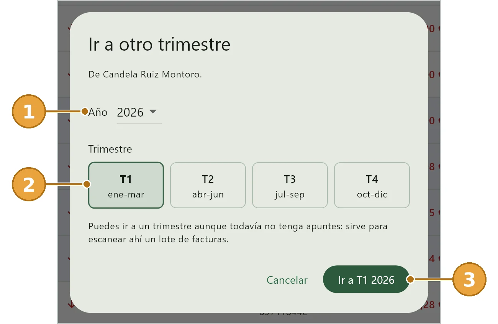
1El año. Desde cinco años atrás hasta el siguiente.
2El trimestre. Cada botón te dice qué meses son.
3Ir. Abre ese trimestre. No se crea nada hasta que entren apuntes.
Quitar todos los apuntes de un trimestre
Los tres puntos que hay junto a «Resultado» tienen una sola opción: quitar de golpe todos los apuntes del trimestre abierto.
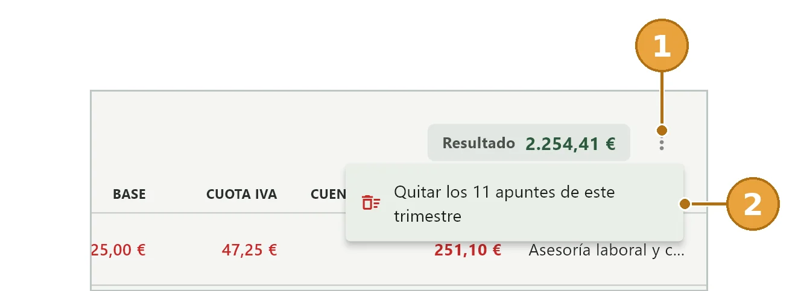
1Los tres puntos, junto a «Resultado».
2Quitar los apuntes de este trimestre.
Atención
Esto borra de verdad: los apuntes no van a la papelera y no se pueden recuperar, salvo con una copia de seguridad. La app te pide marcar una casilla antes. Úsalo solo si estás seguro, por ejemplo para empezar un trimestre de cero. → capítulo 12
Capítulo 5
Cómo entran las facturas
Hay dos caminos, y puedes mezclarlos en el mismo trimestre.
1 · El fichero ZIP exportado desde la app del móvil
Es el camino cómodo: tu cliente exporta su trimestre desde Apunta App en el móvil y te lo manda por correo o por WhatsApp. Ese fichero trae ya los datos revisados por él y las fotos.
Arrastra el fichero sobre cualquier parte de la ventana, o pulsa Importar ZIP. Puedes soltar varios a la vez, de clientes distintos: cada apunte va a la ficha y al trimestre que le corresponde.
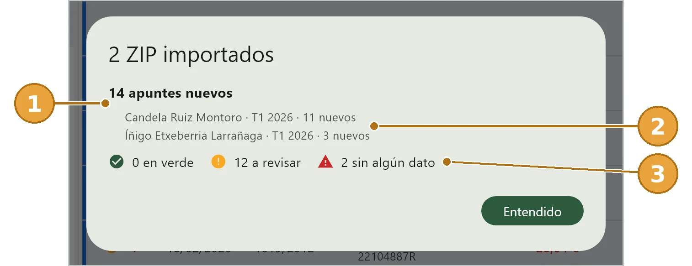
1Cuántos apuntes nuevos han entrado en total.
2A quién han ido. Un renglón por cliente y trimestre. Al cerrar el resumen, la app te deja directamente en la ficha del primero.
3Cómo han entrado. Cuántos vienen en verde, cuántos hay que revisar y cuántos han llegado sin algún dato obligatorio. → capítulo 7
Consejo
Volver a importar el mismo trimestre no borra tu trabajo. Si tu cliente te manda una segunda versión, la app respeta lo que tú ya habías corregido: un hueco en el fichero nuevo no vacía un dato que ya estaba puesto.
2 · Escanear un taco de facturas
Para el sobre de papeles que siempre aparece. Recuerda que la ficha del cliente tiene que existir ya, y esa se crea con una exportación del móvil. Antes de leer nada, la app te hace la única pregunta que no puede adivinar.
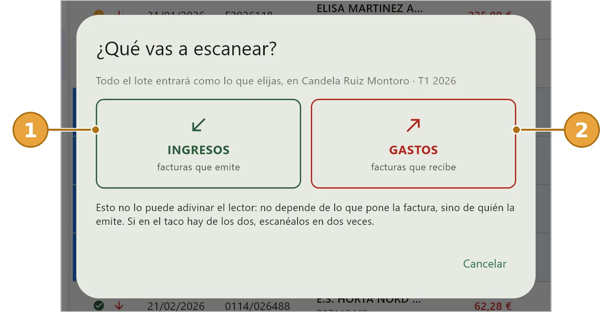
1Ingresos: las facturas que emite tu cliente.
2Gastos: las que recibe. Si en el taco hay de los dos tipos, escanéalos en dos veces.
Después eliges de qué forma le das los papeles.
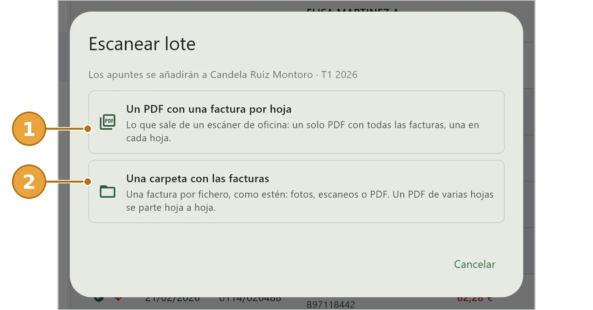
1Un PDF con una factura por hoja. Lo que sale de la fotocopiadora de la oficina: un solo documento con todo el taco.
2Una carpeta. Una factura por fichero, como estén: fotos, escaneos o PDF. Si un PDF trae varias hojas, se parte hoja a hoja.
Capítulo 6
El cuaderno: donde la app aprende
El cuaderno es el sistema de aprendizaje de la aplicación, y es lo que hace que cada vez vaya más rápida. Funciona así: los papeles traen siempre el NIF, pero el nombre aparece escrito de mil maneras. Cuando tú validas por primera vez el nombre de un proveedor, la app lo guarda junto a su NIF, y a partir de ahí lo rellena sola, con tus palabras, en todos tus clientes.
Por eso el primer trimestre es el que más trabajo da, y a partir del segundo la cosa cambia: los proveedores de siempre (la eléctrica, el seguro, el alquiler, la gasolinera) entran ya con su nombre puesto.
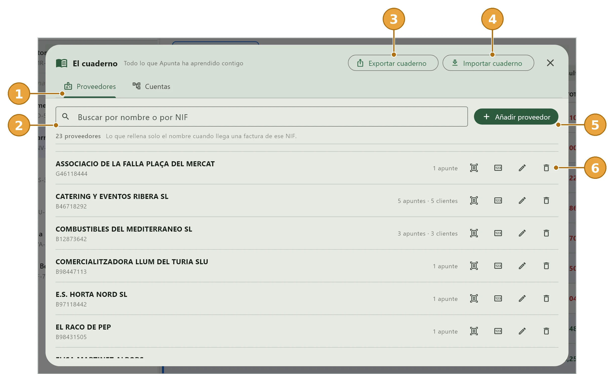
1Proveedores y Cuentas. Los nombres por NIF, y las cuentas contables que uses al exportar.
2El buscador. Por nombre o por NIF.
3Exportar cuaderno. Te llevas todo lo aprendido a un fichero, protegido con una contraseña. No lleva clientes, ni facturas, ni imágenes.
4Importar cuaderno. Para montar un equipo nuevo con el conocimiento que ya tenías, o para compartirlo con un compañero del despacho. Antes te enseña qué cambia; lo que tú has validado a mano se respeta. No se puede deshacer, así que conviene hacer antes una copia de seguridad.
5Añadir proveedor. Por si quieres adelantarte y meter tú uno a mano.
6Los iconos de cada línea. Ver dónde mira la app en las facturas de ese proveedor, su código de actividad (el «123», que sale en la columna de actividad de los libros de CONTASOL), cambiarle el nombre o quitarlo del cuaderno.
Consejo
El cuaderno es global, no de cada cliente. Corriges un nombre una vez y queda corregido para todos los clientes que tengan facturas de ese NIF. Es justo lo que quieres en una gestoría: la eléctrica se llama igual para todo el mundo.
Al cambiar el nombre de un proveedor, la app te pregunta si es un cambio a partir de ahora (la empresa ha cambiado de nombre) o si estaba mal escrito y quieres corregirlo en todo. Cualquiera de los dos se puede deshacer después, desde el registro de cambios. → capítulo 11
Dónde mira la app en las facturas de cada proveedor
El primer icono de cada proveedor abre su estructura: dónde busca la app cada dato en las facturas de ese proveedor. La app lo va aprendiendo sola cuando validas, pero aquí puedes verlo y enseñárselo tú.
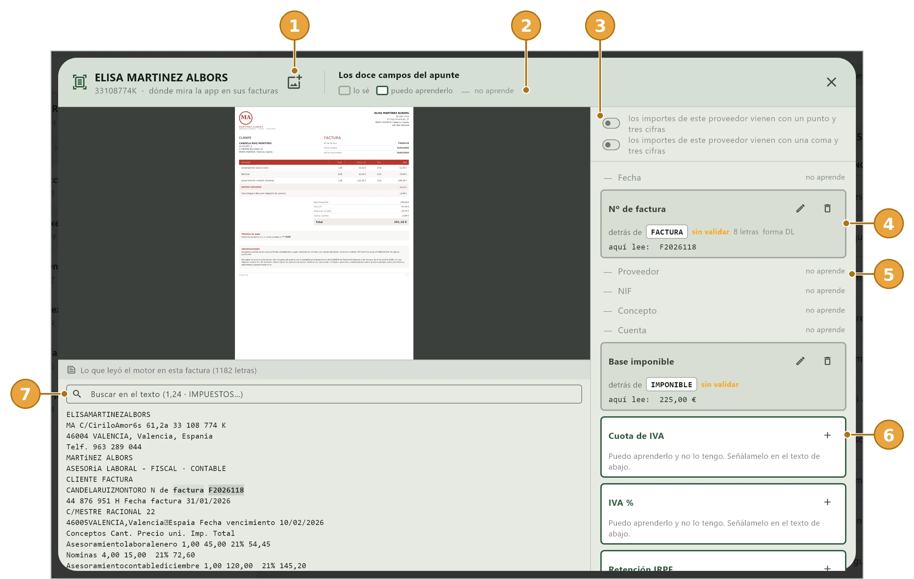
1Añadir otro tipo de factura, si ese proveedor tiene varios modelos distintos.
2La leyenda: lo que la app ya sabe leer, lo que puede aprender y lo que no aprende.
3Importes con tres cifras. Para proveedores que escriben los importes con tres cifras después del punto o de la coma.
4Un dato que ya sabe leer: la palabra que va delante (el ancla) y lo que lee ahí.
5Datos que no aprende de esta forma, porque se leen de otra manera.
6Un dato que puede aprender y todavía no sabe. Con el + le enseñas dónde está.
7Buscar en el texto que leyó la app de esta factura.
Para enseñarle un dato, pulsa su +, selecciona con el ratón en el texto de abajo la palabra que va delante del dato y luego el dato, y pulsa Apuntar. Desde entonces, en las facturas de ese proveedor mirará ahí.
Las cuentas contables
La pestaña Cuentas tiene dos partes: el plan de cuentas, con las cuentas que trae la app y las subcuentas que crees tú, y los sinónimos, que dicen qué cuenta le toca a cada concepto.
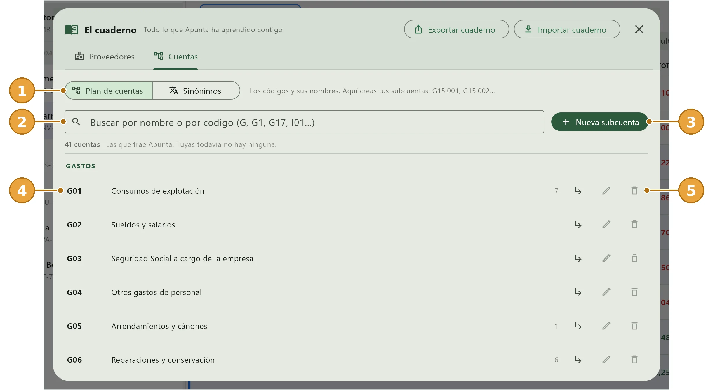
1Plan de cuentas y Sinónimos.
2El buscador. Por nombre o por código: G, G1, G17, I01…
3Nueva subcuenta. Por ejemplo, G15.001 para un tipo de gasto que quieras separar.
4Cada cuenta, con su código y su nombre. El número de la derecha es cuántos apuntes la usan.
5Crear una subcuenta, cambiar el nombre o quitarla. Las dos últimas, solo en las cuentas que has creado tú: las que trae la app no se cambian.
Capítulo 7
El semáforo: verde, ámbar y rojo
Cada apunte lleva un color, y el color no es decorativo: te dice cuánto puedes fiarte de esa línea y, sobre todo, dónde tienes que mirar.
Verde: todo cuadra. La app ha leído los datos del papel y las cuentas salen. Aun así, dale un repaso antes de exportar.
Ámbar: revísalo. Hay algo que no ha podido confirmar, o un dato que cuadra por poco. No está mal necesariamente, pero quiere que lo mires.
Rojo: falta un dato obligatorio. Sin eso el apunte no se puede dar por bueno.
Consejo
La app no se inventa nada. Si un dato no lo ha leído con seguridad, no lo pone en verde: prefiere dejarlo en ámbar y que decidas tú. Un número inventado en un libro registro es mucho peor que un hueco.
El objetivo del trimestre es sencillo: dejar la lista en verde, y repasar también los verdes antes de exportar. Hay dos formas de trabajar, la manual y la automática, que son los dos capítulos siguientes. → capítulo 8 → capítulo 9
Capítulo 8
La ventana de revisión
Pulsa sobre cualquier apunte y se abre la ventana donde ves el papel y los datos a la vez. Es la pantalla donde se hace el trabajo de verdad.
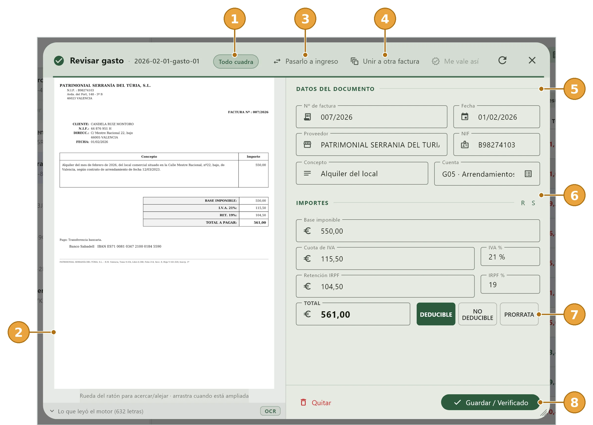
1El estado del apunte. Aquí pone «Todo cuadra» porque las cuentas salen y no falta nada.
2La factura. Con la rueda del ratón acercas y alejas; arrastrando, la mueves. Siempre tienes el papel delante para comprobar.
3Pasarlo a ingreso. Por si un gasto se coló en el lado equivocado. Se aplica al guardar, y la referencia se renumera.
4Unir a otra factura. Para cuando llegan dos papeles del mismo hecho, por ejemplo la factura y su justificante de pago.
5Los datos del documento. Número, fecha, proveedor, NIF, concepto y cuenta contable. Todos se pueden escribir a mano. Al escribir el proveedor o el NIF, la app te propone los que ya conoce del cuaderno.
6Los importes. Base, cuota de IVA, retención y total. Al cambiar uno, la app recalcula lo que depende de él.
7Deducible, No deducible o Prorrata. Lo decides tú: el papel no lo dice.
8Guardar / Verificado. Con esto el apunte pasa a verde y queda validado por ti.
El IVA y la retención
Pulsa el IVA % y eliges entre 21 %, 10 %, 4 %, Exento y Varios. Con Varios aparece un cuadro, el IVA tipo a tipo, con una fila por cada tipo del papel.
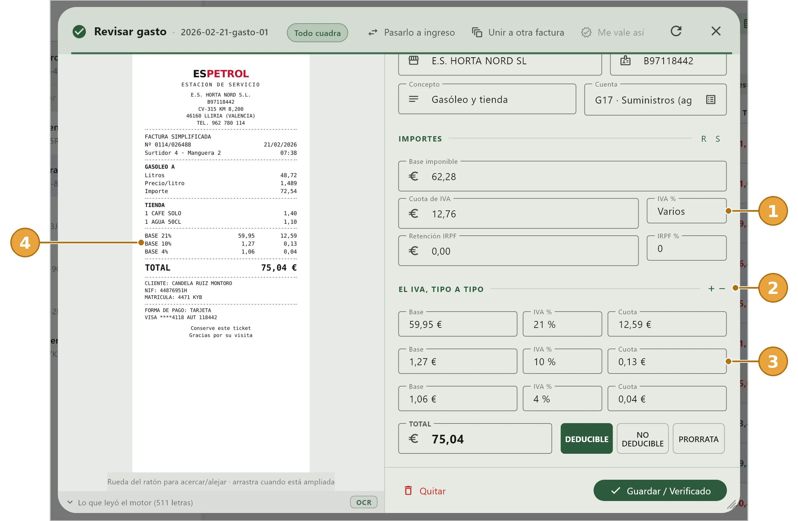
1IVA %: Varios.
2El IVA, tipo a tipo. Con + añades una fila y con − quitas la última; nunca quedan menos de dos.
3Una fila por tipo: la base, el porcentaje y la cuota.
4En el papel, las bases de cada tipo: 21 %, 10 % y 4 %.
El IRPF % ofrece sin retención, 19, 15, 7, 2 y 1 %, y Otros… para escribir cualquier otro. Al cambiar un porcentaje, la app recalcula la cuota y el total.
Recargo de equivalencia y suplidos
A la derecha del título Importes hay dos letras: R añade el recargo de equivalencia y S añade un suplido. Solo aparecen sus casillas cuando las pides, para no llenar la ventana de ceros.
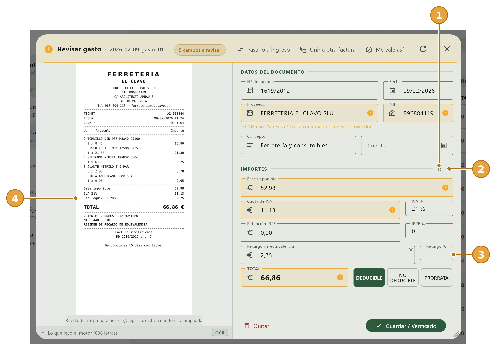
1R. Abre la casilla del recargo.
2S. Abre la del suplido.
3Recargo de equivalencia y Recargo %. Escribes el importe y la app calcula el porcentaje. Con la X de la casilla lo quitas.
4El recargo, en el papel. Aquí, «Rec. equiv. 5,20 %: 2,75».
Si el papel trae recargo, pulsa R y escribe el importe: la app no abre la casilla sola. Al escribirlo, el total se recalcula.
El suplido es lo que el proveedor pagó en nombre de tu cliente y le cobra aparte, sin IVA: una tasa, un registro, un certificado.
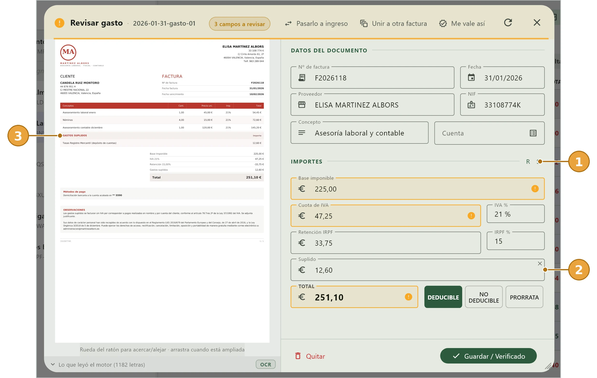
1S.
2Suplido. El importe, que va dentro del total pero no lleva IVA.
3El suplido, en el papel. Aquí, «Gastos suplidos».
Consejo
Cómo cuadra el total: base + cuota de IVA + recargo − retención + suplido. Si escribes tú el total, la app descuenta el recargo y el suplido antes de repartir el resto entre base y cuota.
La cuenta contable
En la casilla Cuenta puedes escribir el código o parte del nombre, y la app te propone las que coinciden. Con el icono de la derecha se abre la lista entera.
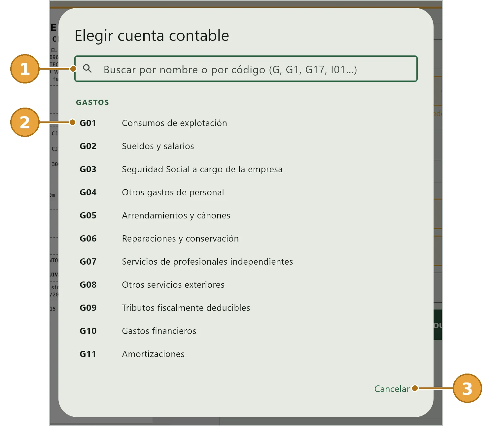
1El buscador, por código o por nombre.
2Las cuentas, agrupadas en gastos e ingresos. Pulsas una y queda puesta.
3Cancelar, para salir sin elegir.
Al guardar, la app aprende qué cuenta le pusiste a ese proveedor y a ese concepto, y te la propondrá la próxima vez. → capítulo 6
Varias hojas y el justificante
Si un apunte tiene varias hojas, encima de la foto salen unas flechas y la cuenta («1 / 2»). El botón Justificante enseña el justificante de pago, si lo tiene. Desde la segunda hoja en adelante puedes sacar esa hoja como apunte propio, con el icono de bifurcación; la primera no se puede sacar.
Refrescar, quitar y cerrar
⟳ Refrescar no vuelve a leer la foto: coge el texto que la app ya leyó y le aplica todo lo que ha aprendido desde entonces (el cuaderno, las cuentas y dónde mira en las facturas de ese proveedor). Solo rellena los datos que estén vacíos y rehace los importes. No guarda nada hasta que pulses Guardar.
Quitar manda el apunte a la papelera. Abajo sale un aviso con Deshacer, y también se recupera desde la rueda dentada de Ajustes, arriba a la derecha. → capítulo 11
La X de arriba, o la tecla Escape, cierra la ventana sin guardar. La esquina de abajo a la derecha se arrastra para hacer la ventana más grande o más pequeña, y la app recuerda el tamaño.
Cuando hay algo que mirar
Si el apunte está en ámbar, la ventana te dice cuántos campos quiere que revises y te los marca uno a uno. No tienes que buscarlos.
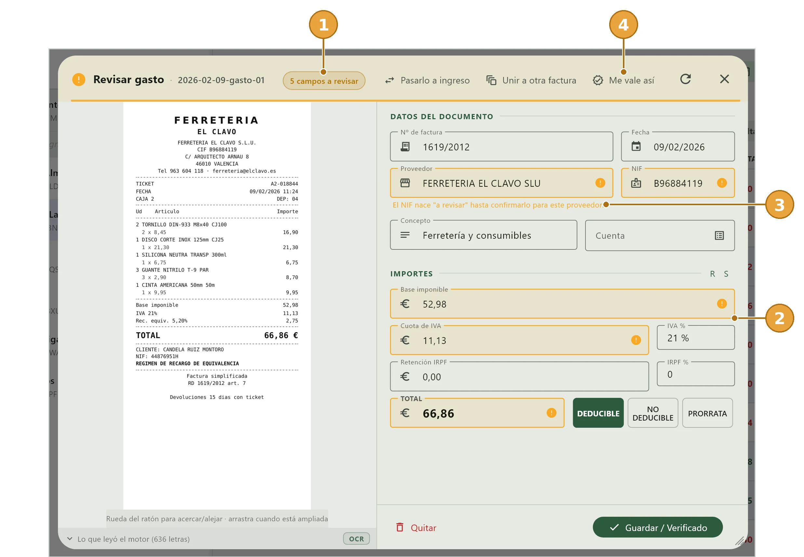
1Cuántos campos hay que revisar.
2Los campos marcados, en ámbar y con su aviso al lado.
3El porqué, escrito. Aquí, que el NIF de un proveedor nuevo nace «a revisar» hasta que tú lo confirmes. Es el cuaderno aprendiendo. → capítulo 6
4Me vale así. Cuando lo has mirado y está bien, esto lo da por bueno sin tocar nada más.
Me vale así solo se puede pulsar en los apuntes en ámbar. El apunte se pinta en verde con un anillo ámbar, para que sepas que lo diste por bueno tú; al exportar, la app te lo recuerda. Si vuelves a pulsarlo, se quita.
Si al apunte le falta un dato imprescindible (el total, el número de factura, el NIF o la fecha), sale una banda roja arriba que dice cuál. Si ese hueco es correcto, por ejemplo un ticket sin número, pulsa su Me vale así y el apunte deja de estar en rojo.
Lo que leyó el motor
Abajo del todo puedes desplegar el texto tal cual lo leyó la app del papel. Sirve para entender de dónde ha salido un dato raro, y para comprobar de un vistazo si el problema está en la lectura o en el propio documento.
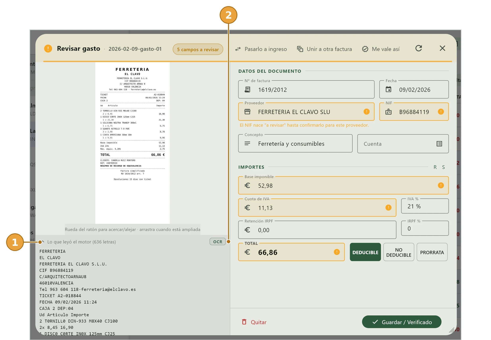
1Lo que leyó el motor, con el número de letras que sacó.
2OCR. Vuelve a leer el documento, por si lo has girado o mejorado.
Unir a otra factura
Cuando un mismo hecho llega en varios papeles (una factura de dos hojas, o la factura y el recibo del banco), Unir a otra factura los junta en un solo apunte. Se abre dentro de la misma ventana, en la mitad derecha.
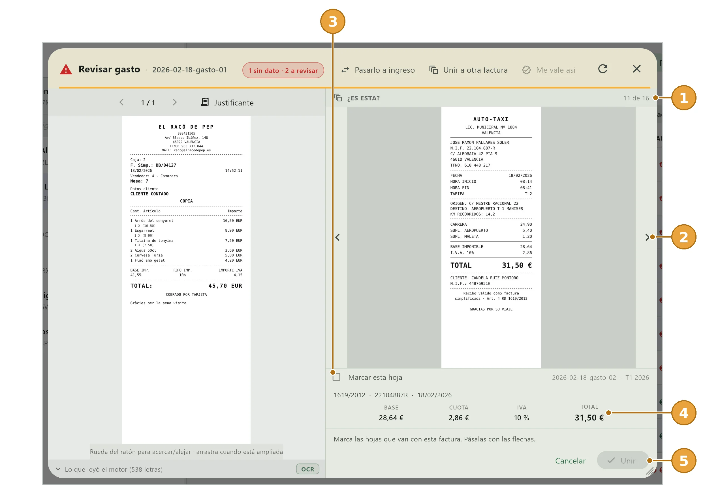
1¿Es esta? La app enseña las hojas de ese cliente, una a una. Arriba, cuántas hay.
2Las flechas, para pasar de una hoja a otra.
3Marcar esta hoja, si va con la factura que tienes abierta.
4Los datos de esa hoja, para compararlos con los tuyos.
5Unir. Pasa a la última pregunta.
Al pulsar Unir, la app te pregunta qué es la segunda hoja: el justificante de pago, que acompaña pero no suma importe, u otra hoja de la factura. En ese caso te pregunta además cuál trae los datos fiscales, que es la que se queda con el apunte.
Consejo
Nada se une hasta que pulsas Guardar / Verificado. Si cierras la ventana sin guardar, todo queda como estaba. Al guardar, las hojas pasan a este apunte y los otros apuntes desaparecen de la tabla.
Capítulo 9
Revisar el trimestre entero
En vez de ir apunte por apunte, puedes decirle a la app que vuelva a leer de golpe todo lo que no está en verde. Es lo que conviene hacer nada más importar un ZIP: en un minuto te deja en verde lo que se puede, y tú te dedicas solo a lo que queda.
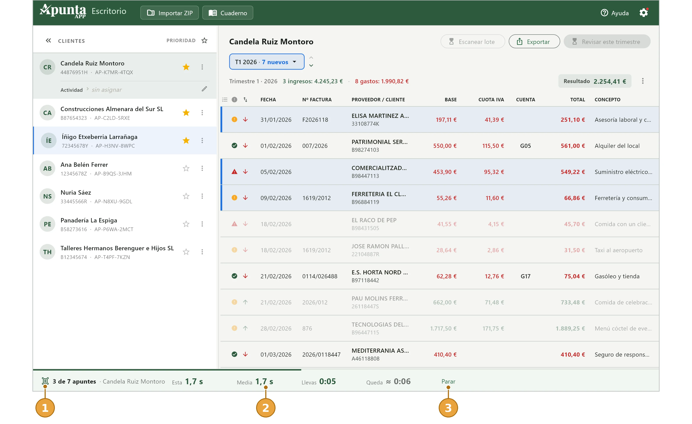
1Por dónde va. Cuántos apuntes lleva y de qué cliente.
2Los tiempos. Lo que tarda cada factura, la media y lo que queda.
3Parar. Puedes cortar cuando quieras; lo ya revisado se queda.
Mientras tanto, en la tabla, los apuntes que esperan su turno se ven en gris y no se pueden abrir; los que ya ha leído pasan a azul.
Consejo
Mientras revisa, puedes seguir trabajando. La app lee en segundo plano; no te bloquea la pantalla ni te obliga a esperar.
Al terminar te da el parte:
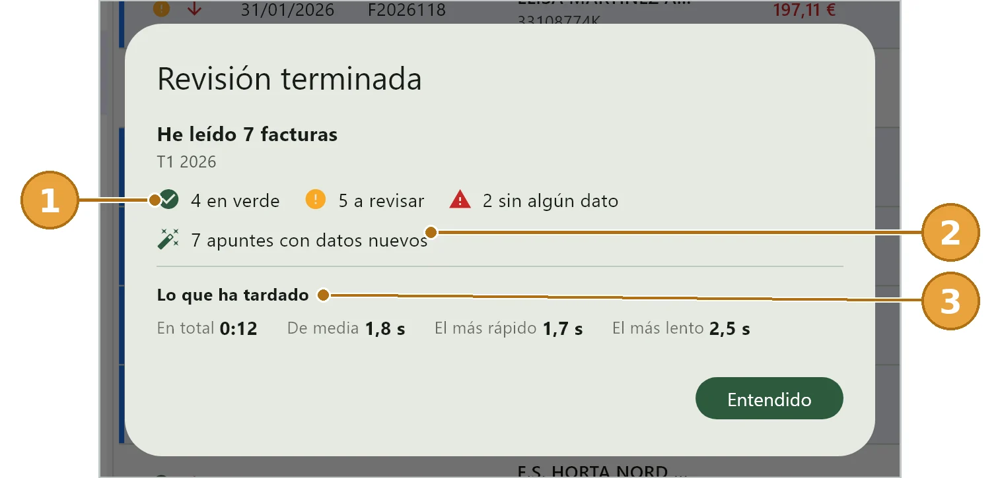
1Cómo queda el trimestre: verdes, a revisar y sin algún dato.
2Cuántos apuntes han ganado datos nuevos en esta pasada.
3Lo que ha tardado, en total y por factura.
Capítulo 10
Exportar para tu programa de contabilidad
Cuando el trimestre está como quieres, el botón Exportar te lo saca en el formato que necesites. Todo lo que genera se refiere al cliente y al trimestre que tengas abiertos.
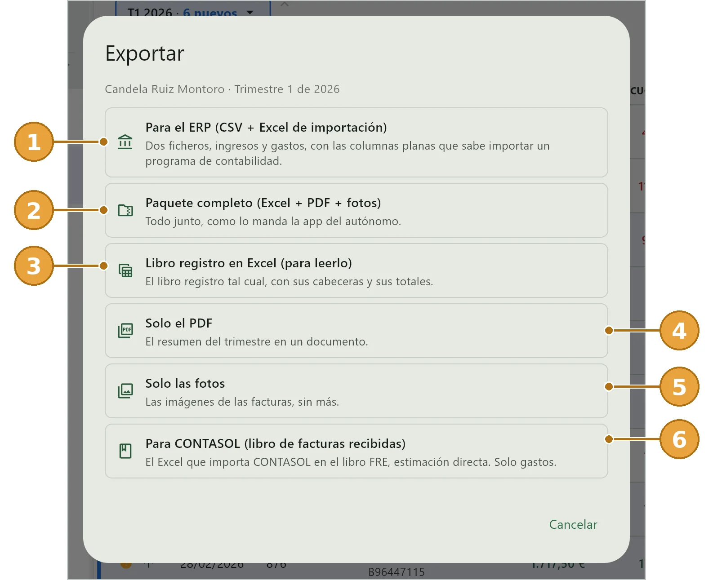
1Para el ERP (CSV + Excel). Dos ficheros, ingresos y gastos, con las columnas planas que sabe importar un programa de contabilidad.
2Paquete completo. Excel, PDF y fotos, todo junto: igual que lo manda la app del móvil.
3Libro registro en Excel. El libro tal cual, con sus cabeceras y sus totales, para leerlo o mandárselo al cliente.
4Solo el PDF. El resumen del trimestre en un documento.
5Solo las fotos. Las imágenes de las facturas, sin más.
6Para CONTASOL. El Excel que importa CONTASOL en el libro de facturas recibidas, en estimación directa. Antes te pregunta por tu último número de registro, para seguir la numeración.
Antes de exportar, la app te avisa si quedan apuntes en rojo (puedes exportar igual o verlos primero) y te recuerda los que diste por buenos con «Me vale así». Exportar no cambia nada de los apuntes, y funciona también sin suscripción.
Capítulo 11
Ajustes y ayuda
La rueda dentada de Ajustes, arriba a la derecha, abre tres ventanas.
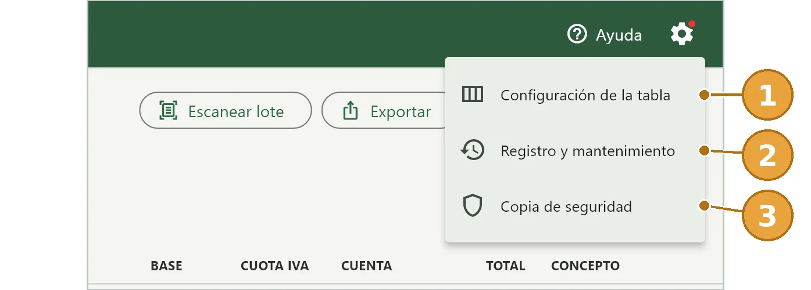
1Configuración de la tabla. Qué columnas quieres ver. → capítulo 3
2Registro y mantenimiento. Lo que la app ha aprendido, la papelera, el mantenimiento y el lector.
3Copia de seguridad. Tiene capítulo propio, y conviene leerlo. → capítulo 12
Registro y mantenimiento
Aquí ves lo que la app ha ido aprendiendo contigo, y puedes deshacerlo si algo no te gustó.
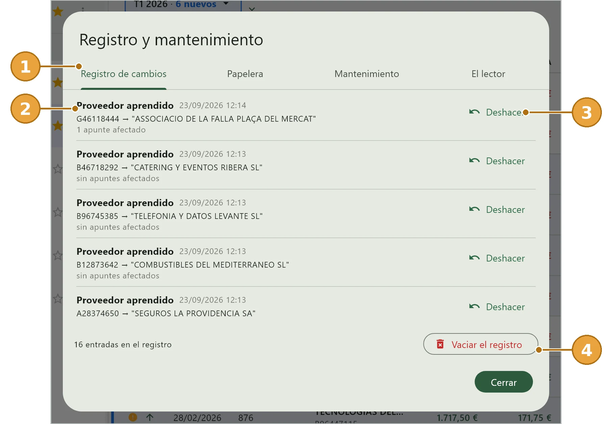
1Las cuatro pestañas: registro de cambios, papelera, mantenimiento y el lector.
2Cada cosa aprendida, con su fecha y a cuántos apuntes ha afectado.
3Deshacer. Quita ese aprendizaje concreto.
4Vaciar el registro. Limpia la lista; no borra apuntes.
Las otras tres pestañas:
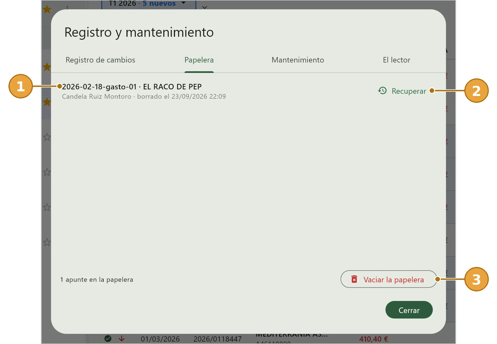
1El apunte quitado, con su cliente y el día en que lo quitaste.
2Recuperar. Lo devuelve a su trimestre.
3Vaciar la papelera. Borra de verdad todo lo que hay dentro, con sus imágenes. No se puede deshacer.
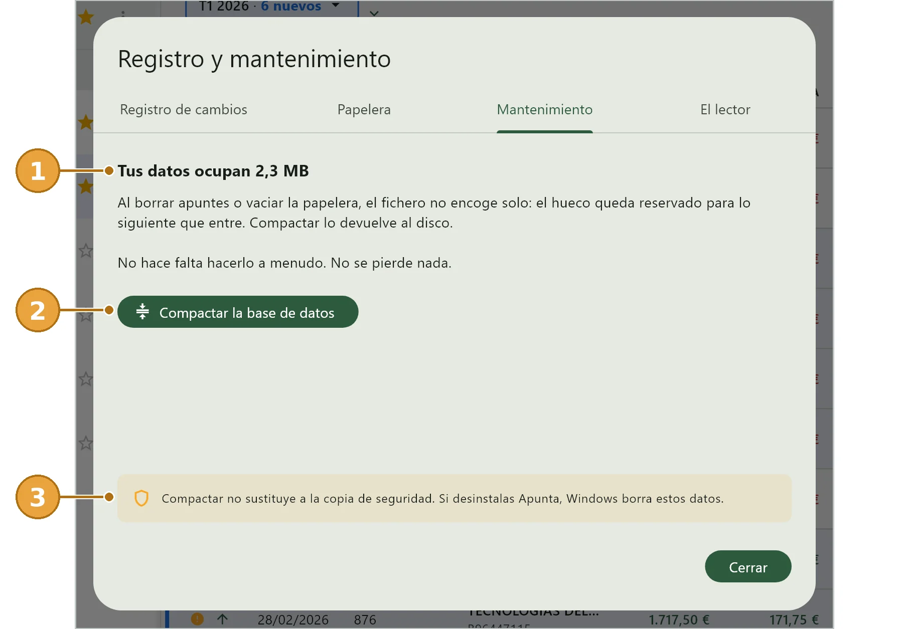
1Cuánto ocupan tus datos.
2Compactar la base de datos. Devuelve al disco el hueco que dejan los apuntes borrados. No se pierde nada, y no hace falta hacerlo a menudo.
3El recordatorio: compactar no sustituye a la copia de seguridad.
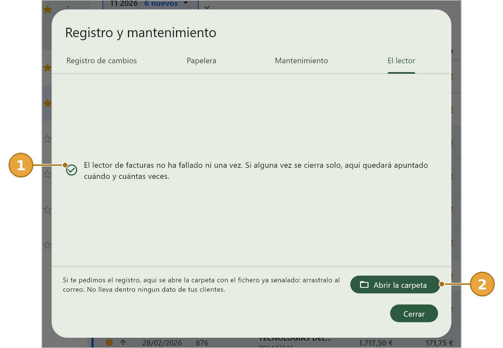
1Cómo va el lector. Si alguna vez se cierra solo, aquí queda apuntado cuándo y cuántas veces.
2Abrir la carpeta. Si te pedimos ese registro para ayudarte, aquí lo tienes para mandarlo por correo. No lleva ningún dato de tus clientes.
El menú de Ayuda
Arriba a la derecha, al lado de la rueda dentada de Ajustes.
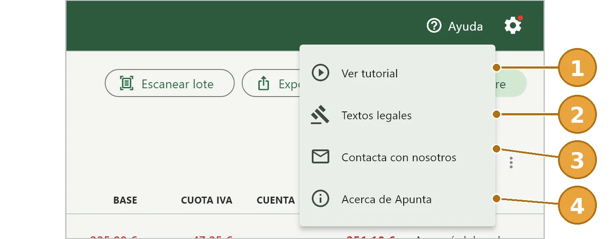
1Ver tutorial. El recorrido guiado de tres pasos que sale la primera vez. Lo puedes repetir cuando quieras.
2Textos legales. Los términos y condiciones, la política de privacidad y el aviso legal, dentro de la app.
3Contacta con nosotros. Abre un correo nuevo a apunta@apuntaapp.com, si tu equipo tiene un programa de correo configurado.
4Acerca de. La versión instalada. → capítulo 13
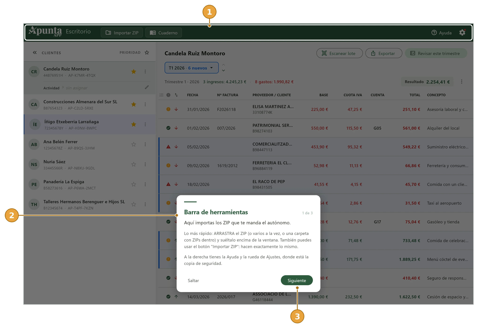
1Lo que explica cada paso, iluminado; el resto de la pantalla se oscurece.
2El paso, con su explicación.
3Siguiente. O Saltar, para cerrarlo.
Capítulo 12
Copia de seguridad, y por qué importa
Como todo vive en tu ordenador y la app no guarda nada en ningún servidor, la copia de seguridad no es un trámite: es la única forma de recuperar el trabajo si el equipo se estropea, si cambias de ordenador o si alguien desinstala la aplicación.
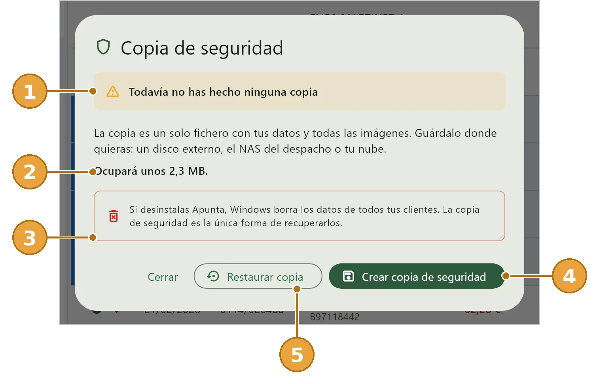
1Cuándo hiciste la última. Si nunca has hecho ninguna, te lo dice en amarillo.
2Cuánto va a ocupar, para que sepas dónde te cabe.
3El aviso que conviene leer: al desinstalar, Windows borra los datos de todos tus clientes.
4Crear copia de seguridad. Un solo fichero con los datos y todas las imágenes, protegido con una contraseña que eliges tú. Guárdalo donde quieras: un disco externo, el servidor del despacho o tu nube.
5Restaurar copia. Trae de vuelta lo que hubiera en esa copia. Te pide su contraseña y te pregunta antes de sustituir los datos de ahora.
Atención
Cuándo hacerla, en la práctica: al cerrar cada trimestre y antes de cualquier cosa gorda (cambiar de equipo, actualizar Windows, desinstalar). Es un minuto, y es lo que separa un susto de un desastre.
Atención
Apunta la contraseña de cada copia. Si la pierdes, nadie puede abrir esa copia, ni siquiera nosotros.
Restaurar una copia
Pulsa Restaurar copia, elige el fichero y escribe su contraseña.
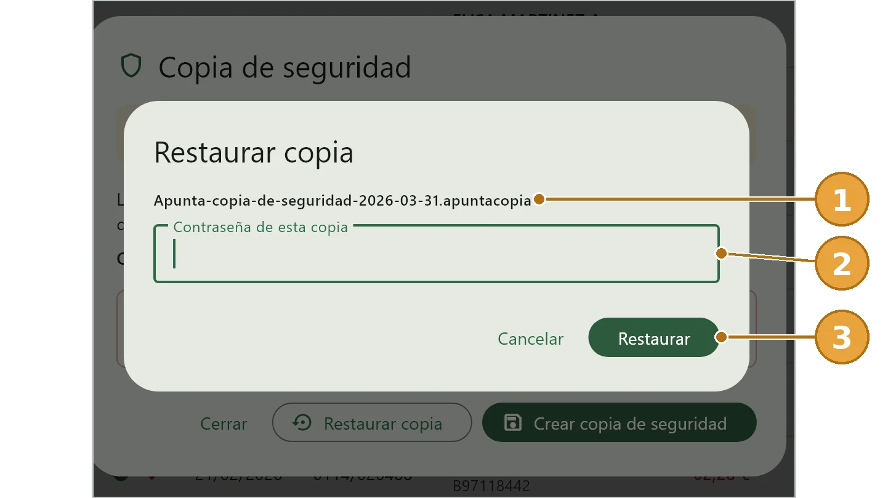
1El fichero que has elegido.
2La contraseña de esa copia.
3Restaurar. Antes de seguir, te pregunta si quieres sustituir los datos de ahora por los de la copia.
Para que no se te olvide, la rueda dentada de Ajustes, arriba a la derecha, lleva un punto rojo cuando no tienes copia o la última tiene 30 días o más.
Capítulo 13
Preguntas frecuentes
¿Qué versión tengo instalada?
En Ayuda, arriba a la derecha. Es el primer dato que te van a pedir si escribes para contar un problema.
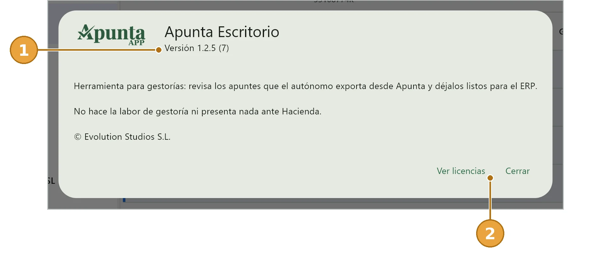
1La versión instalada.
2Ver licencias. Los componentes de terceros que usa la aplicación.
Mi cliente me ha mandado el trimestre otra vez. ¿Pierdo lo que ya había corregido?
No. Al volver a importar, lo que ya estaba puesto se respeta: un hueco en el fichero nuevo no vacía un dato que tú habías rellenado.
¿Puedo mezclar facturas del móvil y facturas escaneadas en el mismo trimestre?
Sí. Los dos caminos acaban en la misma tabla y se exportan juntos.
Un proveedor sale con un nombre raro
Corrígelo una vez en la ventana de revisión o en el cuaderno. A partir de ahí, todas las facturas de ese NIF llevarán el nombre que tú pusiste, en todos tus clientes. → capítulo 6
He quitado un apunte por error
Está en la papelera. Pulsa la rueda dentada de Ajustes, arriba a la derecha, y luego Registro y mantenimiento → Papelera. Ahí se recupera con un botón. Si acabas de quitarlo, también vale el Deshacer del aviso de abajo. → capítulo 11
¿Qué pasa si mi suscripción no está activa?
Tus datos siguen ahí y puedes seguir abriendo, corrigiendo, validando y exportando, además de usar el cuaderno y la copia de seguridad. Lo que se apaga es lo que lee facturas: Importar ZIP, Escanear lote, Revisar este trimestre y ⟳ Refrescar.
¿Y si borro todas las fichas?
La app se queda vacía, esperando el primer fichero de un cliente. Si las borraste por error, restaura tu última copia de seguridad: vuelven las fichas con todos sus apuntes. Si no tienes copia, pide a tus clientes que te vuelvan a mandar su ZIP desde el móvil y arrástralo encima de la ventana. → capítulo 12
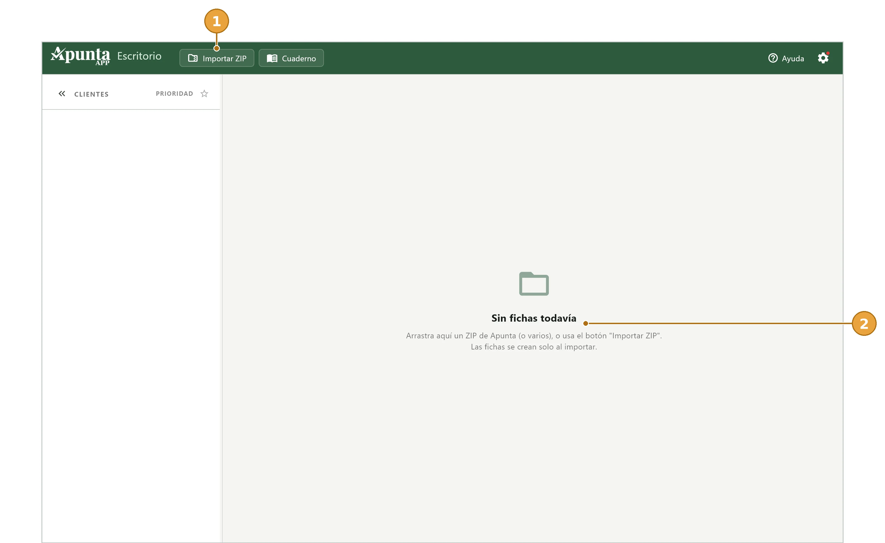
1Importar ZIP.
2Sin fichas todavía.
¿Cómo vuelvo a ver el tutorial?
En Ayuda → Ver tutorial. → capítulo 11
¿Dónde están mis datos?
En tu ordenador, y solo ahí. Por eso el capítulo de la copia de seguridad es el más importante de este manual. → capítulo 12
¿Con quién hablo si algo no va?
Escríbenos a apunta@apuntaapp.com, diciendo qué versión tienes y, si puedes, adjunta la factura que da problemas. Con eso se resuelve casi todo.
Apunta... Y olvídate.
⬇ Descargar el manual en PDF© 2026 Evolution Studios S.L. Todos los derechos reservados. Queda prohibida la reproducción, distribución o modificación, total o parcial, de este manual por cualquier medio sin la autorización previa y por escrito de Evolution Studios S.L.